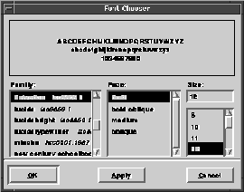

Figure 41. A font chooser

Using the Font Chooser
This section contains sample code that will help you get started using the font chooser in an application. Rather than exploiting all of the features of the font chooser, this sample demonstrates the most useful base-level routines.
To use the font chooser, you need to write an apply function. Example 74 shows an apply function that changes the style of selected text in a text item. A pointer to the text item is stored in the data pointer of the font chooser:
Example 74. A simple font chooser
int applyFont(vfontchsr *fontChooser, vfont *font)
{
vtextStyle *style;
vtextitem *textItem;
/* First, get the text item from the data pointer
* of the style chooser.
*/
textItem = (vtextitem *) vfontchsrGetData(fontChooser);
/* Then create a new style, set the font attribute
* for the style, and install it into the text data
* owned by the text item.
*/
style = vtextCreateStyle();
vtextSetStyleAttribute(style, vtext_Font, font);
vtextInstallStyleOwned(vtextitemGetTextData(textItem),
style);
/* Now apply the new style with the chosen font
* to the selected text in the text item.
*/
vtextApplyStyle(vtextitemGetTextData(textItem),
vtextitemGetSelection(textItem), style);
return(TRUE);
}
After the apply function is written, you can then create a font chooser that allows the style of the selected text in a text item to be changed.
vfontchsr *fontChooserWindow = vfontchsrCreate();
vfontchsrSetData(fontChooserWindow, myTextItem);
vfontchsrSetApply(fontChooserWindow, applyFont);
vfontchsrOpen(fontChooserWindow);
The font chooser is created, the data pointer for the font chooser is set to point to the text item you want to change the styles for, apply function is set to the apply function, and the font chooser is opened. Any time a font is chosen and a confirm button is pressed, the selected text in the text item changes to the chosen font.